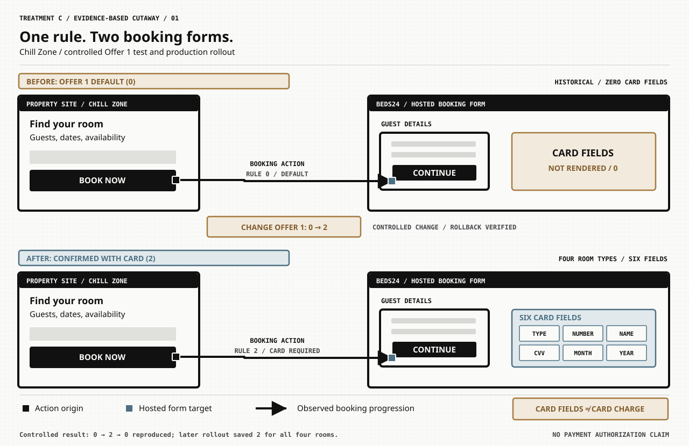
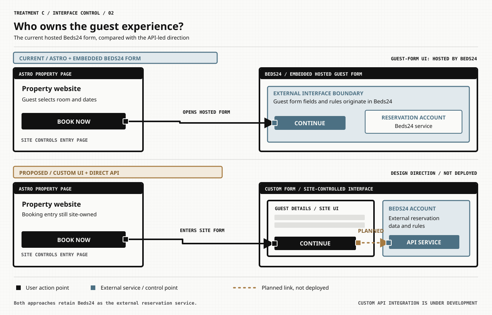

STUDY 01 / CONTROLLED TEST / HISTORICAL VS CURRENT
When does the booking form ask for card details?
Chill Zone provided a controlled comparison. Changing Offer 1 Booking Type from Default (0) to Confirmed with credit card (2) changed the guest form from zero credit-card fields to six. The initial test was rolled back successfully, and the setting was later saved and verified for all four room types.

What actually changed
The controlled test changed one per-room Offer 1 setting and observed both the Price Check outcome and the hosted form field count change. Reverting the setting reversed both observations. Subsequent rollout retained the card-required value for all four Chill Zone rooms.
Limits of the evidence
Six displayed card controls do not prove a charge was authorized or processed. The zero-field state is historical, not the current Chill Zone configuration. Pink Bubble and Seaside have not been shown to follow the same outcome.

STUDY 02 / CURRENT EMBEDDED VS API-LED DIRECTION
Who controls the guest-facing booking interface?
The existing Astro site controls the surrounding property page, while the guest-details form is hosted by Beds24. The selected API-led direction would place more of that interface under the site's control while retaining Beds24 as the reservations service. The dotted connection is deliberately marked planned—not deployed.

Existing embedded experience
The guest form comes from Beds24. Its booking rules and card-field presentation are configured within the external booking platform rather than in the static Astro page itself.
Custom/API-led direction
A custom form could allow closer control over user experience and validation, while the external service remains responsible for reservation capabilities. The proposed API connection is shown as in development and is not presented as a shipped feature.

What should this visual language communicate?
Every connection has a reason to exist; every exposed interior reveals something meaningful. The square markers and line styles are not ornament. They direct attention to where a user's action begins, what it reaches, and which boundaries are actually established versus merely proposed.
This is still an experimental design study. No private production site or public v0.1 package was changed to show these illustrations.